| |
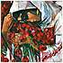 "Quando
Corpus Morietur..": notes in
Pergolesi’s "Stabat
Mater"; a grief-stricken fragmented
waving "andante" pondering on
harmonies. As such Pergolesi seems to
turn our painters’ light into a
poet’s word-musicalness peeping
through colour heaps chosen to become
signs and messages on square breathless
fretted canvases for you, poet-painters,
musing over memories of the past.
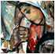 Waving jugged
harmonies of purposes, of signs, of
aesthetic rules and shapes, willingly
designed to be undefined and indefinite
but stubbornly restricted and readable
pigments, far-created corners, shaped
winding meanderings, hands on shoulders
in moving generations.
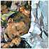 A
mother’s bosom is not given to sink
into oblivion and to become
unconsciouness; it is shown as a deep
wait, a shower of light from heaven into
horizontal-shaped faces.
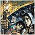 It is when the
detailed coloured pigments of a dull
grey-dark/blue-yellow/red-pink light,
turning into violet, goes from the tent
lamp over the multitude of shape-faced
words. And it does no matter if it ceases
flowing on the delicate chromatic values
of the ever green "zaitoun"
tree or the sleeping dawn-coloured baby,
or on the tangled hair of the night
shaped as untiring insatiable
unsatisfied, as a vague craving.
It is when such
detailed coloured pigments reach the
penetrating sweetness and softness of an
innocent evolution, there in a hug of
hands lies a never betrayed eye of
innocence.
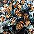 A crystal-clear
mosaic in brush strokes shaping a cosmic
whole bowed under a star brushed heaven
vault. The multitude of looks seems an
indistinct universe: on the contrary it
is an introspection gesture, burning,
enraged, bare, incredulous, disappointed,
out in its dull-coloured eyes but not in
its arms, not in its smile addressed to
children fully flooded by a rising sun.
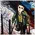 Out in your
grey-blues and in your red-violets: a
geometric gathering taking a form of
crowds of thoughts, actions,
disappointments, wishes, hopes,
expectations, incredulity but never in
their hands, never in their arms, never
in their limbs: even the ashes of
Tamam’s powdered-arches remembrance
are self-denial and disappointment
turning into creed.
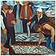 Every element, every
tiny belief is a meaningful autonomous
microcosm, a main message : if we sharply
look at a face expression, at an eye
lightening message, at a bright or deem
face (in Ismail’s canvases) we will
see each of them as a main topic, as a
touching element, as an involving chorus
even if hidden or vanishing in an
apparently negligible secondary
background. It is the joyfulness of the
creation, of the message, of the hidden
left concealed creature: the
artist’s caress to the waiting, to
the sufference.
Charge of being
neglected, buried in tear drops.
Resurrection of the flesh. Ascension of
spirits. Tired eyes, faded away in their
light burning bosom; it is the only point
where the white colour is alone without
greys and deserted blacks. Dawn of inner
nights where a heart of light goes into
raptures in a face given to a breeze,
given to a universe kiss, to the light
sleep, to the harmonious distress of the
memory and tender-given gestures.
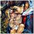 Do overturn
your eyes in these constellations of
lives a sleeping baby will come towards
you as he is in his surrounded
mother’s arms: those arms, those
eyes, those faces, those reddened covered
half-shaped and given looks will come at
last to innocence softness; there lie the
orange and the greens, the pink-violets,
the fregmented long touch-brushes of the
orange-violets.
The day is
absent except in the tired disappointed
waving faces of the night. The dawn, in
their hearts, is always sad faintly-given
secluded hidden; it breaks out bursting
aloud thanks to the painter’s felt
colours and motion sharp-drawings: a
forced hope to feel alive quaking every
time dripping teachings.
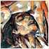 I do not
know when the sun will lay down its
coloured fingers on these inner
sadnesses, I know that in the endless
look the white moments of the light will
flood over the innocence that Spring
recovers as days in smiles.
|
|
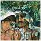 Here Ismail
Shammout bends sufference, toils, pains
in a knot of arms shadowed under olive
trees using long blackened brushes of
rage entrusted with, as penetrating
fingers into the earth, and followed by
eyes and bending heads upon the
ineluctable intensity of an
unextinguished prayer.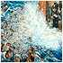 Here Tamam
leaves to forgetfulness her sorrow still
creeping on her Jaffa home and follows
the shadows with inexplicable trembles of
fully-coloured edged-waves which change,
overwhelm, worm into, meet, break, become
colour sequences in the meanders of 1948
sea depths and of strechted vertical
barbed iron of clouds, open wide the
sleep’s and death’s pallets to
turn into nights of a developing light:
the look of an untainted girl sitting on
the boundaries of the night forgetting
loosing horses, cries overflowing inner
droughts, the impetuous swing of dreams
stolen to the shore.
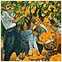 It is an
Ismail who intersects and cuts shadows to
become "springtime", intensity
to discover. The movements of
Tamam’s oranges change its serene
yellow into the dark blue of thorns and
lightenings and lamps (Ismail’s). I
have not seen smiles but in the pink
violets of heaven’s bride’s
azure edged cheeks.
The night in Ismail
continuously overturns and his canvas
breaks the rips of the dynamic quivering
wait .
His intensity
ravishes and breaks each breath in every
part of his work which is intense full of
images, happenings, messages,
introspections, outlines, sequences of
lives, chronicle in unison through
stories bound to time.
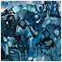 A first
glance at the canvas enraptures, a second
attempt leads to signs, forms, prominent
shapes then to hidden powers, latent
minutenesses among the blue colours, the
grey and the white of the canvas. Then
shapes as arms come out suddenly
discovered in the coloured thoughts as
perceived surprises. It is the night of
looks and the face set turns into single
visages and countenances; unique in our
eyes and in our minds, pictures in
picture, canvases in canvas, thicknesses
and cries. They still detain tenderness.
Each detail is
autonomous. The whole is a sun’s
power. Each tenderness is white and clear
as life. Sunsets are as dawns more and
more.
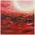 Time is
melting in Ismail’s tidy palette,
and through colours it spontaneously lies
down shaping souls and possessing the
canvas.
Time overflows itself
in Tamam’s scattered palette, lying,
as before, in gripping touches of
memories.
The colour has also
taken away the bride’s virgin dream;
it has carved its song in each
abandonment and runs after a night, each
night, of a sinking sun .
Waves as steps
transferring messages to the young: a
pure shape of life.
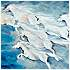 Power of
unidentified symbols of tenderness.
Horses to be.
What a sense of freedom, what a longing
of open feelings of life even soften,
more familiar, in a grandfather’s
arms to protect in innocence.
Nights in agony, as bitter murmers,
shatter the quietness, yet from
pink-yellow drop-boundaries - far way in
the lamp colours - a low tender voice of
silence is ever praying.
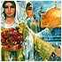 A symphony
of sorrow and a symphony of hope. Past
and future are running after each other.
It is the agony of the existence: the
present turns immediately into a
remembrance and disappears in the
blue-dark tones or in the white light
mirrored happiness. The future shapes
itself as a dream.
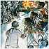 If the dream
does not hold out in Ismail’s mind
and in his complete sketches which call
to life vigorous boys swinging stones in
the sky outlines; if it does not hold out
in Tamam’s limpid horse drawing
lines, it turns immediately present
becoming by order identified past. Your
tiny past-present-past dreaming stone
makes the world pale.
Blind glimmers are
all the yellows hanging on the present
waiting mariner standing like still
seclusion on a choral voices of the past.
|


 Sample
tour
Sample
tour